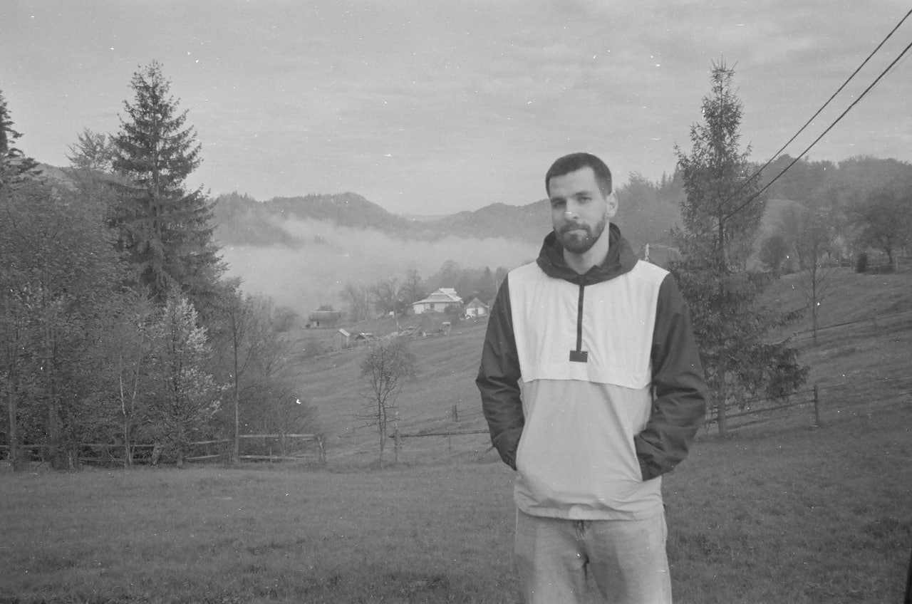

Serhii Tytiuk
Serhii Tytiuk is a quantitative researcher and polling professional. He has a 3-year experience in a survey research, research methods and data analysis (pretend to have it)

WORK EXPERIENCE
Analyst, the Ukrainian Institute
Conducting research on the state and prospects of Ukrainian studies in the world (compiling a database, developing a questionnaire)
Writing informational materials on the Ukrainian cultural heritage destroyed during the war (project “Postcards from Ukraine”)
Writing analytical notes for the Ministry of Foreign Affairs of Ukraine on the topic of cultural diplomacy
Project Manager/Senior Researcher, Ipsos April 2019 – April 2022
Project management in quantitative social and political research (30+ projects): preparation of tender proposals; research design and methodology development; monitoring of fieldwork, data quality control and data processing procedures; data analysis and modelling; reporting; communication with clients on all stages of projects. Among the projects:
Study on decentralization with a sample of 31 thousand respondents for the DOBRE program (USAID) with treatment and control groups of consolidated communities (85 CCs in total) in2019 (used difference-in-differences for impact evaluation). I also wrote a proposal for the second wave of the study, which was successful, and an additional 10,000 interviews were conducted in 25 communities.
A series of 5polls before the parliamentary elections in Georgia in 2020 and 3 polls before the local elections in 2021 for the Mtavari TV channel. Project management of exit polls in 2020 and 2021 (responsible for data collection tool, fieldwork monitoring and data processing)
Parallel study on the perception of media narratives in the Baltic countries with a national representative sample in each country (3000 respondents, USAID)
Damage assessment analysis of the war in Donbas for the World Bank (data collection and preliminary analysis on changes and the current situation in the Donetsk and Lugansk oblasts in the following sectors: education, healthcare, energy, transportation, WASH)
Survey on cybersecurity in Ukraine and Moldova in 2021: nationwide surveys of the general population and enterprises (Council of Europe)
Other studies in Ukraine and abroad (Belarus, Georgia, Moldova) for clients such as NDI (account manager of this client), Norwegian Refugee Council (account manager of this client), IRI, GIZ, U-LEAD, Sayara International, ICRC, IFC, Rustavi, etc.
Participation in the methodology development of most projects in the department of social and political research, sample design for all projects
EDUCATION
Kyiv School of Economics 2020-in progress
Master’s degree in Public Policy and Governance
Thesis: Overcoming the consequences of unequal access of students from different territories of Ukraine to secondary education due to the COVID-19 pandemic and the war with Russia
Taras Shevchenko National University of Kyiv 2013-2017
Bachelor’s degree, Political science
Thesis: The Impact of Automation on Social Inequality and Democracy
INFORMAL EDUCATION
Summer schools and seminars
Summer school “Good Society: What Rules We Live by and What We Want to Live by?” (InLiberty) August 2019
Summer philosophical school “New Technologies, Social Media and Future of Democracy” (Ukrainian Catholic University) July 2018
Higher Political School (Centre of Political Studies and Analytics Eidos) March 2017
School of international journalism “Challenges of Decommunization” (Ukrainian Catholic University) November 2016
MOOCs
Datacamp: data analysis and statistics in R; edX: Data Analysis for Social Scientists (MIT), Evaluating Social Programs (MIT), Introduction to Data Analysis using Excel (Microsoft), Global Media, War, and Technology (The University of Queensland); Udemy: R Programming A-Z; Udacity: Statistics; Coursera: Microeconomics, Macroeconomics, Public Economics, Economic Sociology (НИУ ВШЕ), etc.
SKILLS
Languages
| Language | Reading | Writing | Speaking |
|---|---|---|---|
| English | C1 | B2 | B2 |
| Ukrainian | C2 | C2 | C2 |
| Polish | A1 | A1 | A1 |
Technical skills:
- Microsoft Excel – advanced
- R and SPSS – proficient
- Tableau – beginner
- Basic skills of web scraping, geospatial analysis
Coding examples
plot(cars)
plot(pressure)